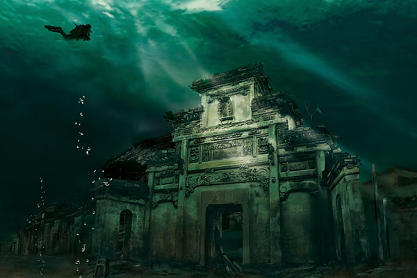

I 1959 måtte Shi Cheng vannkraft bygges, noe som også betydde at det var nødvendig med en menneskeskapt demning. Byen ble snart oversvømmet og ligger nå 131 meter under det som nå er Qiandao Lake. Til tross for dens lange levetid under havnivå har noen av byens trekonstruksjoner holdt seg intakte. Fra landet er byen ingen steder å se, men de siste årene har dykkere oppdaget den overdådige byen og planlegger å gjøre den til en turistattraksjon.
